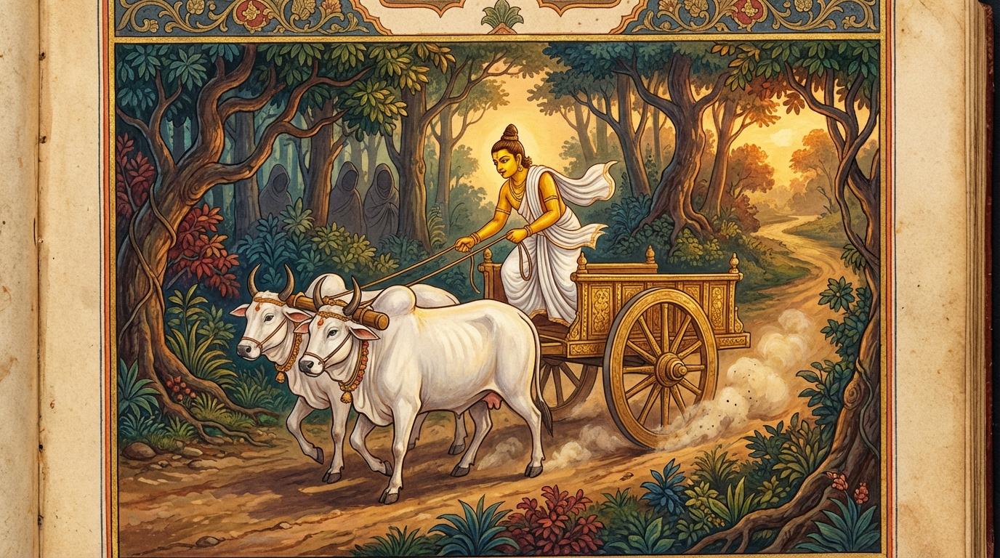

3. වෙරි ජාතකය (103)
“යත්ථ වෙරී නිවසති” (යම් තැනක වෛරක්කාරයෝ වෙසෙත් ද) යන මේ ජාතකය බුදුරජාණන් වහන්සේ ජේතවනාරාමයේ වැඩවසන සමයෙහි අනේපිඬු මහා සිටුතුමා අරබයා දේශනා කළ සේක. අනේපිඬු සිටුතුමා දිනක් තමාට අයත් ගමකට ගොස් නැවත එන අතරමගදී සොරුන් දැක, “අතරමග නවාතැන් ගැනීම නුසුදුසු ය. සැවැත් නුවරට ම යන්නෙමි” යි සිතා, ගොනුන් වේගයෙන් දක්කාගෙන සැවැත් නුවරට ම පැමිණියේය. පසු දින විහාරයට ගිය හෙතෙම බුදුරජාණන් වහන්සේට මේ පුවත සැළ කළේය. එවිට බුදුරජාණන් වහන්සේ, “ගෘහපතිය, පෙර නුවණැත්තෝ ද අතරමගදී සොරුන් දැක, අතරමග නොරැඳී තමන් වසන ස්ථානයට ම ගියහ” යි වදාරා අතීත කථාව ගෙනහැර දැක්වූ සේක.
අතීතයේ බරණැස් නුවර බ්රහ්මදත්ත රජු රාජ්ය කරන සමයේ, බෝධිසත්වයන් වහන්සේ මහා සම්පත් ඇති සිටුවරයෙක් ව උපන්හ. එතුමා එක් කුඩා ගමකට ආරාධිත භෝජනයක් අනුභව කිරීම සඳහා ගොස් නැවත එන අතරමගදී සොරුන් සිටිනු දුටුවේය. අතරමග නොනැවතී වේගයෙන් ගොනුන් දක්කාගෙන තම නිවසට ම පැමිණි එතුමා, නොයෙක් රසවත් ආහාර අනුභව කොට සිරියහනෙහි වැතිර ගත්තේය. “සොරුන්ගේ අතින් මිදී නිර්භය ස්ථානය වූ තම නිවසට ම පැමිණියෙමි” යි සිතා, ප්රීතිය පළ කිරීම් වශයෙන් මේ ගාථාව පැවසීය.

“යම් තැනක වෛරී කෙනෙක් (සතුරෙක්) වසත් ද, නුවණැත්තේ එහි නො විසිය යුතුය. මක්නිසා ද යත්, වෛරීන් අතර එක් දවසක් හෝ දෙදවසක් වුව ද වසන්නා හට දුක සේ විසීමට සිදුවන හෙයිනි.”
එහි “වෙරී” යනු ද්වේෂ සහගත සිතිවිලිවලින් යුක්ත පුද්ගලයා ය. “නිවිසතී” යනු පිහිටයි හෙවත් වෙසෙයි යන්නයි. “න වසෙ තත්ථ පණ්ඩිතො” යනු ඒ වෛරී පුද්ගලයා යම් ස්ථානයක ස්ථිර ව වාසය කරයි ද, පාණ්ඩිත්යයෙන් යුතු නුවණැත්තා එහි වාසය නොකළ යුතුය. ඊට හේතුව කුමක් ද යත්; “එකරත්තං දිරත්තං වා දුක්ඛං වසති වෙරිසූ” යනු විරුද්ධවාදීන් (සතුරන්) අතර වසන්නා එක් දවසක් හෝ දින දෙකක් වුව ද දුක සේ ම වසයි යන අර්ථයි.
මෙසේ බෝධිසත්වයන් වහන්සේ තම ප්රීතිය ප්රකාශ කොට, දානාදී පින්කම් සිදු කර, කම් වූ පරිදි මිය පරලොව ගියහ.
බුදුරජාණන් වහන්සේ මෙම ධර්ම දේශනාව ගෙනහැර දක්වා ජාතකය නිම කළ සේක. “එකල බරණැස් සිටුවරයා වී උපන්නේ මම ම වෙමි.”
තුන්වන වූ වෙරි ජාතක වර්ණනාවයි.